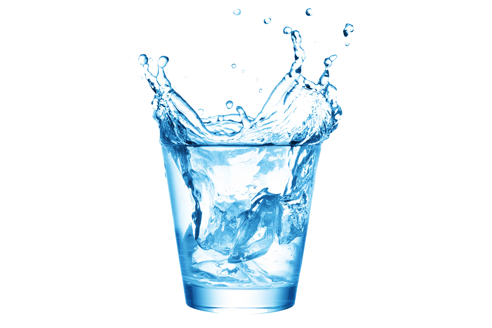
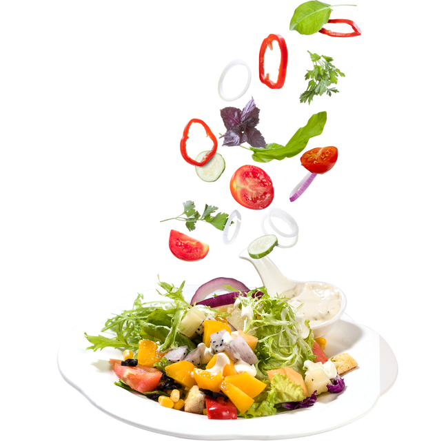

7 Day GM Diet Plan for Weight Loss
The GM Diet Plan is focused on ensuring the consumption of complex carbs, along with low-calorie foods. This combined with an increased water intake can result in a significant weight loss in the span of a week.
The idea is to limit one’s weekly diet to just fruits, vegetables, brown rice, and chicken. The plan, initially designed for the employees of General Motors, is as shown below.
Day 1
- All fruits – except bananas
- Recommended fruits are watermelon and muskmelon
- 8 to 12 glasses of water
Day 2
- Large boiled potato
- Cooked or uncooked vegetables of your choice without oil
- 8 to 12 glasses of water
Day 3
- All fruits – except bananas
- Cooked or uncooked vegetables (except potatoes) of your choice without oil
- 8 to 12 glasses of water

Day 4
- 8 to 10 bananas
- 3 to 4 glasses of milk
- 8 to 12 glasses of water
Day 5
- 6 tomatoes
- One cup of brown rice
- 12 to 15 glasses of wate

Day 6
- One cup of brown rice
- Cooked or uncooked vegetables (except potatoes) of your choice without oil
- 8 to 12 glasses of water
Day 7
- One cup of brown rice
- Any vegetables
- All fruit juices